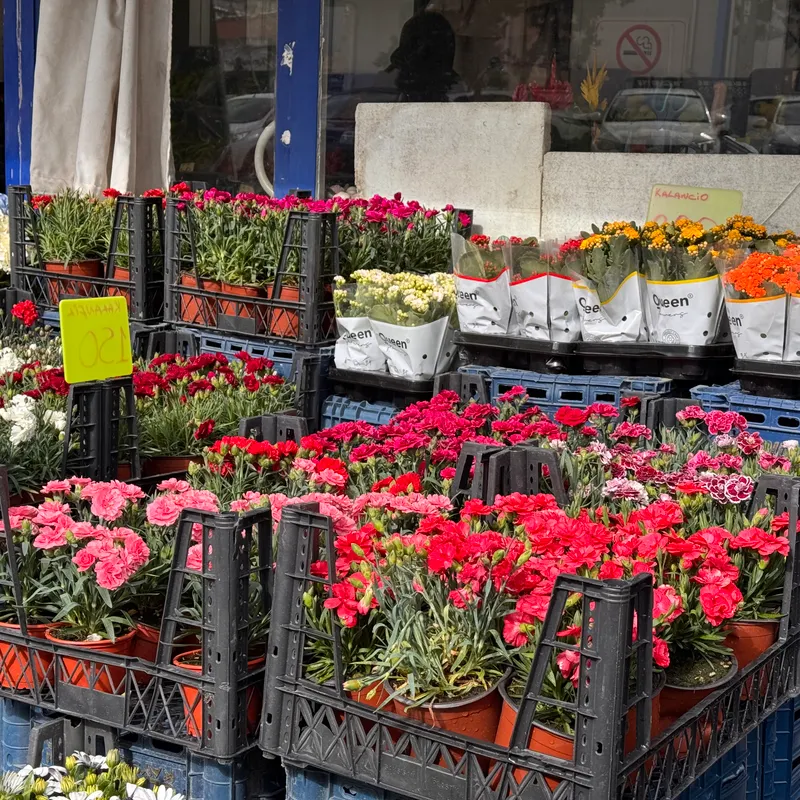
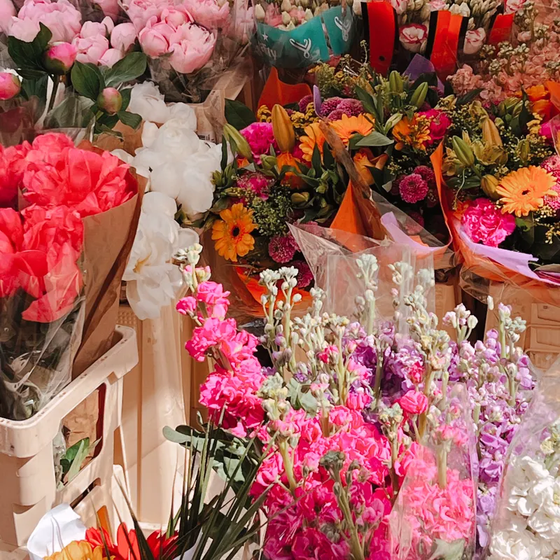
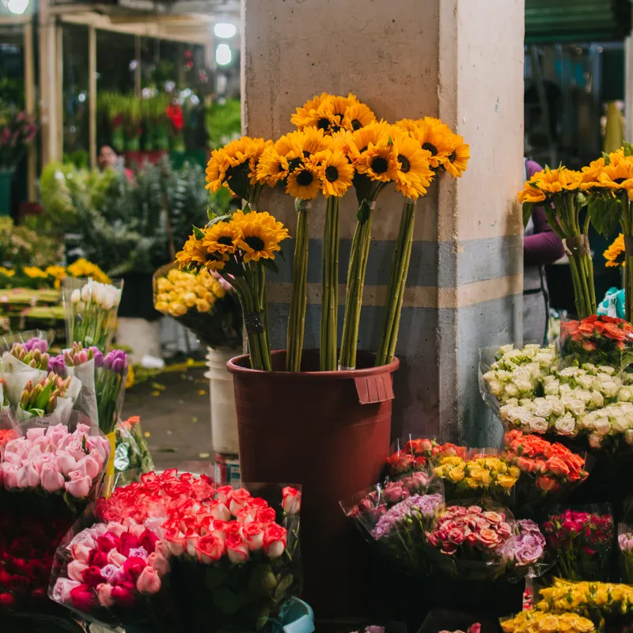
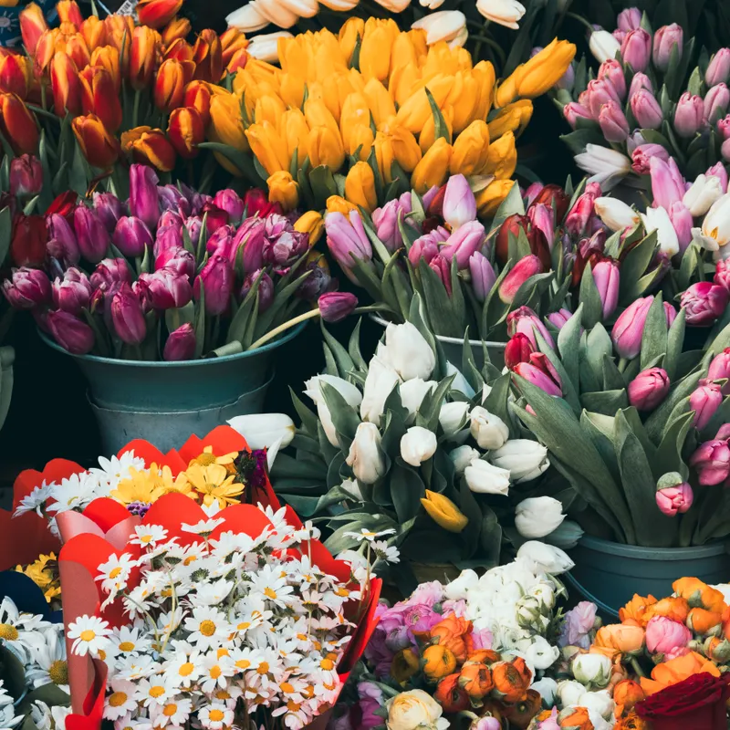
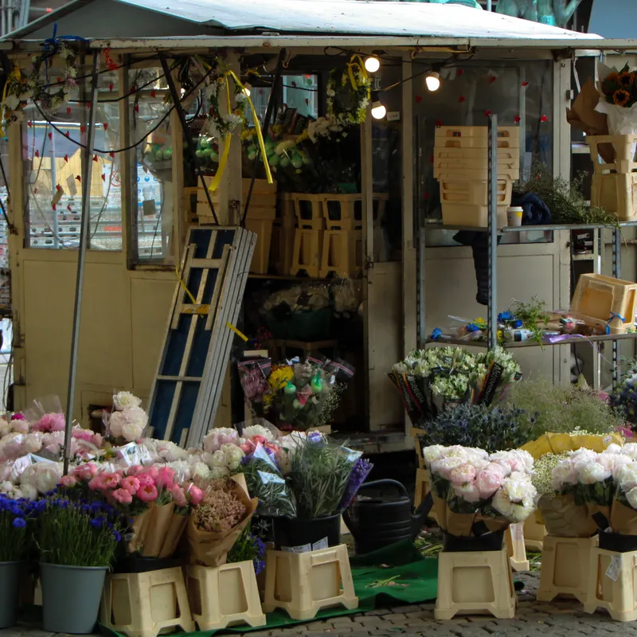
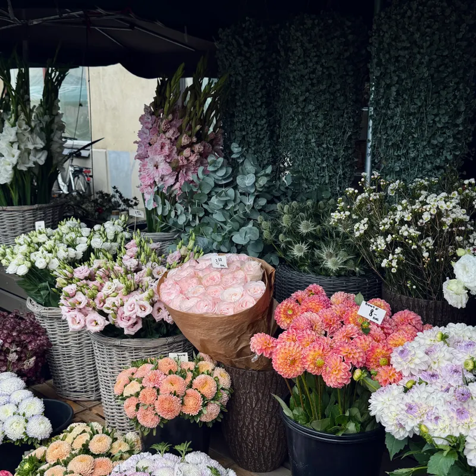
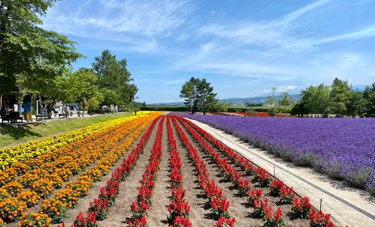
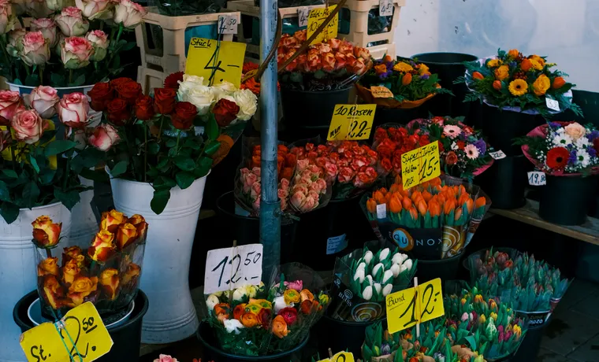
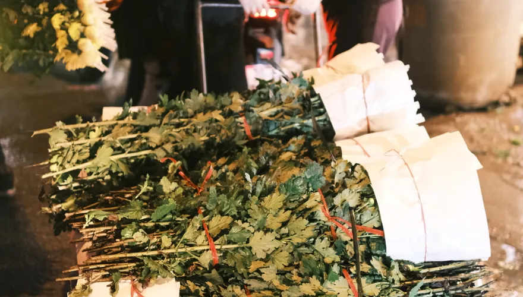

花田
滇中坝子上的大棚连成片。清晨或傍晚采收，花苞带着硬度被剪下，这时候它还不知道自己要去哪。
云南 · 昆明 · 呈贡 / 24°N, 102°E
亚洲花都
你在花店里买下的那枝玫瑰，很可能三天前还在滇中的一片花田里。 中间隔着 上千公里、四五道环节，和一个不眠的夜晚。 这里是这条链的起点，也是全国最大的鲜切花集散地之一。






一个内陆村庄，怎么会成为全国鲜花的中转站？答案一半在气候里，一半在三十多年攒下的产业里。
昆明地处云贵高原，海拔约一千九百米。紫外线强、昼夜温差大、冬天不冷夏天不热——这三件事同时成立的地方不多，而鲜切花恰好全都要。温差让花茎长得结实、花色更浓，凉凉的夜晚又让花苞开得慢，采下来能多放好几天。
气候只是入场券。真正让斗南成为斗南的，是一整套把花送出去的能力：周边成片的种植基地、采后预冷与分级包装的车间、夜里发车第二天到达的冷链干线，以及全国各地的分销网络。花在这里被集中、分级、定价、装车，然后散向四面八方。
对旅行者来说，斗南的有趣之处在于：它不是一个为游客准备的景点。它首先是一个批发市场，顺带才是一个可以逛的地方。你看到的每一扎花都是真的在流通的货，价格是真实的批发价，场面是真实的日常。
亚洲最大
鲜切花交易集散地之一待核实
每 10 枝 7 枝
全国鲜切花中来自云南的比例待核实
1000+
市场内流通的花卉品种待核实
24h
几乎昼夜不停轮转的市场节奏
从滇中的一片花田，到你家客厅的花瓶，中间要经过五道关口。每一步都在和时间赛跑。
滇中坝子上的大棚连成片。清晨或傍晚采收，花苞带着硬度被剪下，这时候它还不知道自己要去哪。
采后第一时间进冷库，把田间热带走。这一步决定它能撑多久——花采下来那一刻，保鲜战就开始了。
按枝长、花头大小、开放度分成不同等级，二十枝一扎捆好。同一品种，等级不同价格差出一截。
装进恒温车厢，连夜出发。第二天早上，这批花已经出现在千里之外的城市花市里。
经过花店的手，最后插进你家的花瓶。从剪下枝条的那一刻算起，通常不超过七十二小时。
斗南的花几乎全年不断，但每个月的"主角"不一样。选一个月份，看看那时候市场上什么最多。
花期为云南产区大致上市期，受气候与品种影响会有浮动，仅作出行参考。
几点开门、有几个区域、坐什么车、什么时段最适合去——出发前先看这一节。
花花世界主馆
游客主要活动区域
9:00–18:00
夜场
灯光下的花市，氛围不同
20:00–22:00
门票
公共区域无需预约
免费
19:00–20:00 市场关闭，进不去。这一个小时是消毒与整理时间，用来准备夜场。想晚上来请等到 20:00 之后再进场，别跑空。
花花世界主馆
游客最常去的一栋。鲜切花、干花、盆栽分层陈列，可以按枝买也可以按扎买，包装和快递代办都在这一带。
适合 第一次来的人 · 想买花带走的人
周边花街
主馆外面一圈沿街店铺，花材、包装纸、花瓶花器都有。价格更接地气，也更能看到市场日常的一面。
适合 慢慢淘 · 买花器和包装
昆明地铁 4 号线「金桂街站」 是距离市场最近的地铁站，出站后步行即可到达步行时间待实测
1 号线「斗南站」也可到达，但距离相对较远，要多走一段。
同一个地方，不同时间是完全不同的两个世界。挑一个你喜欢的时刻去。
02:00深夜 · 花田

大多数人睡熟的时候，周边产区的采收和预冷正在收尾，装花的车一辆接一辆往市场方向开。你在白天看到的那片整齐花海，此刻正被一扎扎搬上车。
10:00上午 · 主馆

开馆一两个小时，花刚上架、水还新鲜，品种也最全。玫瑰、百合、洋桔梗一桶桶排开，颜色浓得有点不真实。这个时候拍照光线也最好。
20:00夜场 · 花街

一个小时的消毒整理结束后，夜场开门。灯串亮起来，白天的交易区变成了散步的地方。十块钱一大把的满天星，有人抱着花走出来，连背影都带着香气。